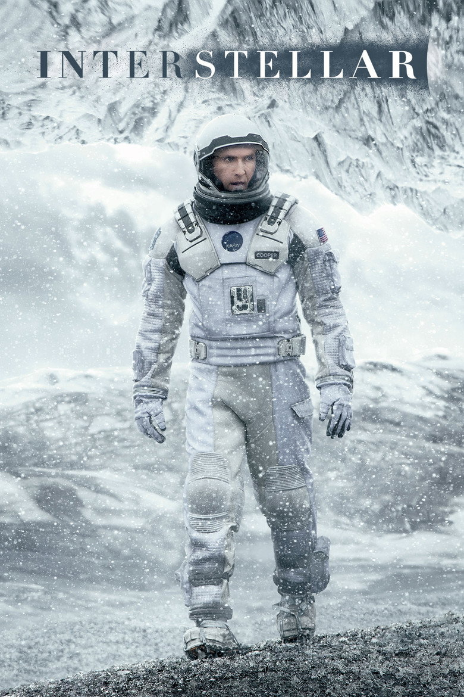
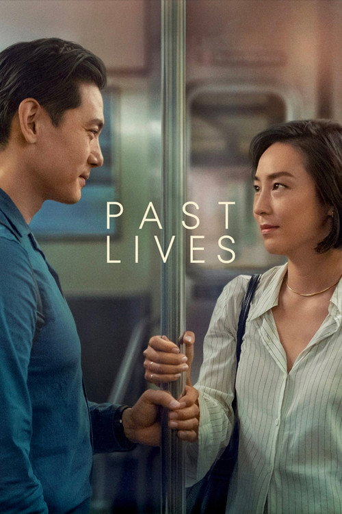
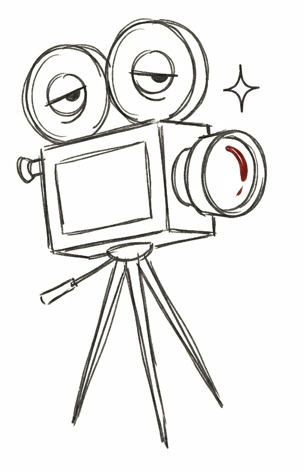

Log the feeling.
Begin with your honest overall rating. Admiring a film and loving it aren’t always the same thing.
A viewing journal, with a point of view
For the scenes you remember.
The choices you notice. The films that become yours.
Your instinct first. Eight questions after.
Private by default. No made-up taste labels.



NoticeNot another number. A point of view.
Keep your enjoyment. Give it a little context.
Let your next film start from what you love.
Begin with your honest overall rating. Admiring a film and loving it aren’t always the same thing.
Eight short questions about story, performance, images, sound and the details that stayed with you.
Get early genre-and-tag matches. Your aspect preferences develop separately as your journal grows.
Your next favourite film has a way of finding you.